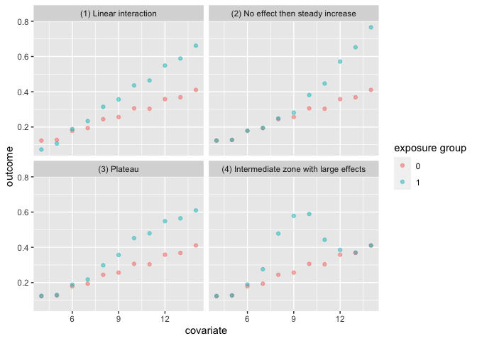

Authors: Lucy D’Agostino McGowan
License: MIT
The quartets package is a collection of datasets aimed to help data analysis practitioners and students learn key statistical insights in a hands-on manner. It contains:
- Anscombe’s Quartet
- Causal Quartet
- Datasaurus Dozen
- Interaction Triptych
- Rashomon Quartet
- Gelman Variation and Heterogeneity Causal Quartets
Installation
You can install the quartets package from CRAN as follows:
install.packages("quartets")Or the development version of quartets like so:
devtools::install_github("r-causal/quartets")Anscombe’s Quartet
The goal of the anscombe_quartet data set is to help drive home the point that visualizing your data is important. Francis Anscombe generated these four datasets to demonstrate that statistical summary measures alone cannot capture the full relationship between two variables (here, x and y). Anscombe emphasized the importance of visualizing data prior to calculating summary statistics.
- Dataset 1 has a linear relationship between
xandy
- Dataset 2 has shows a nonlinear relationship between
xandy
- Dataset 3 has a linear relationship between
xandywith a single outlier
- Dataset 4 has shows no relationship between
xandywith a single outlier that serves as a high-leverage point.
In each of the datasets the following statistical summaries hold:
- mean of
x: 9
- variance of
x: 11
- mean of
y: 7.5
- variance of y: 4.125
- correlation between
xandy: 0.816
- linear regression between
xandy:y = 3 + 0.5x
- R2 for the regression: 0.67
Example
library(tidyverse)
library(quartets)
ggplot(anscombe_quartet, aes(x = x, y = y)) +
geom_point() +
geom_smooth(method = "lm", formula = "y ~ x") +
facet_wrap(~dataset)
anscombe_quartet |>
group_by(dataset) |>
summarise(mean_x = mean(x),
var_x = var(x),
mean_y = mean(y),
var_y = var(y),
cor = cor(x, y)) |>
knitr::kable(digits = 2)| dataset | mean_x | var_x | mean_y | var_y | cor |
|---|---|---|---|---|---|
| (1) Linear | 9 | 11 | 7.5 | 4.13 | 0.82 |
| (2) Nonlinear | 9 | 11 | 7.5 | 4.13 | 0.82 |
| (3) Outlier | 9 | 11 | 7.5 | 4.12 | 0.82 |
| (4) Leverage | 9 | 11 | 7.5 | 4.12 | 0.82 |
Causal Quartet
The goal of the causal_quartet data set is to help drive home the point that when presented with an exposure, outcome, and some measured factors, statistics alone, whether summary statistics or data visualizations, are not sufficient to determine the appropriate causal estimate. Additional information about the data generating mechanism is needed in order to draw the correct conclusions. See this paper for details.
Example
ggplot(causal_quartet, aes(x = exposure, y = outcome)) +
geom_point() +
geom_smooth(method = "lm", formula = "y ~ x") +
facet_wrap(~dataset)
causal_quartet |>
nest_by(dataset) |>
mutate(`Y ~ X` = round(coef(lm(outcome ~ exposure, data = data))[2], 2),
`Y ~ X + Z` = round(coef(lm(outcome ~ exposure + covariate, data = data))[2], 2),
`Correlation of X and Z` = round(cor(data$exposure, data$covariate), 2)) |>
select(-data, `Data generating mechanism` = dataset) |>
knitr::kable()| Data generating mechanism | Y ~ X | Y ~ X + Z | Correlation of X and Z |
|---|---|---|---|
| (1) Collider | 1 | 0.55 | 0.7 |
| (2) Confounder | 1 | 0.50 | 0.7 |
| (3) Mediator | 1 | 0.00 | 0.7 |
| (4) M-Bias | 1 | 0.88 | 0.7 |
Datasaurus Dozen
Similar to Anscombe’s Quartet, the Datasaurus Dozen has additional data sets where the mean, variance, and Pearson’s correlation are identical, but visualizations demonstrate the large difference between datasets. This dataset is re-exported from the datasauRus R package.
Example
ggplot(datasaurus_dozen, aes(x = x, y = y)) +
geom_point() +
geom_smooth(method = "lm", formula = "y ~ x") +
facet_wrap(~dataset)
datasaurus_dozen |>
group_by(dataset) |>
summarise(mean_x = mean(x),
var_x = var(x),
mean_y = mean(y),
var_y = var(y),
cor = cor(x, y)) |>
knitr::kable(digits = 2)| dataset | mean_x | var_x | mean_y | var_y | cor |
|---|---|---|---|---|---|
| away | 54.27 | 281.23 | 47.83 | 725.75 | -0.06 |
| bullseye | 54.27 | 281.21 | 47.83 | 725.53 | -0.07 |
| circle | 54.27 | 280.90 | 47.84 | 725.23 | -0.07 |
| dino | 54.26 | 281.07 | 47.83 | 725.52 | -0.06 |
| dots | 54.26 | 281.16 | 47.84 | 725.24 | -0.06 |
| h_lines | 54.26 | 281.10 | 47.83 | 725.76 | -0.06 |
| high_lines | 54.27 | 281.12 | 47.84 | 725.76 | -0.07 |
| slant_down | 54.27 | 281.12 | 47.84 | 725.55 | -0.07 |
| slant_up | 54.27 | 281.19 | 47.83 | 725.69 | -0.07 |
| star | 54.27 | 281.20 | 47.84 | 725.24 | -0.06 |
| v_lines | 54.27 | 281.23 | 47.84 | 725.64 | -0.07 |
| wide_lines | 54.27 | 281.23 | 47.83 | 725.65 | -0.07 |
| x_shape | 54.26 | 281.23 | 47.84 | 725.22 | -0.07 |
Interaction Triptych
This set of 3 datasets demonstrating that while the slopes estimated by a simple linear interaction model may be the same, the underlying data-generating mechanisms can be vastly different.
ggplot(interaction_triptych, aes(x, y)) +
geom_point(shape = "o") +
geom_smooth(method = "lm", formula = "y ~ x") +
facet_grid(dataset ~ moderator)
Rashomon Quartet
This dataset demonstrates that model diagnostics alone (such as R2 and RMSE) do not tell the full story of a prediction model. Here, there are three predictors and one outcome. Models fit using a regression tree, linear regression, random forest, and neural network all yield the same R2 and RMSE, but are finding different relationships between the predictors, as evidenced by the below partial dependence plots.
set.seed(1568)
library(tidymodels)
library(DALEXtra)
rec <- recipe(y ~ ., data = rashomon_quartet_train)
## Regression Tree
wf_tree <- workflow() |>
add_recipe(rec) |>
add_model(
decision_tree(mode = "regression", engine = "rpart",
tree_depth = 3, min_n = 250)
)
tree <- fit(wf_tree, rashomon_quartet_train)
exp_tree <- explain_tidymodels(
tree,
data = rashomon_quartet_test[, -1],
y = rashomon_quartet_test[, 1],
verbose = FALSE,
label = "decision tree")
## Linear Model
wf_linear <- wf_tree |>
update_model(linear_reg())
lin <- fit(wf_linear, rashomon_quartet_train)
exp_lin <- explain_tidymodels(
lin,
data = rashomon_quartet_test[, -1],
y = rashomon_quartet_test[, 1],
verbose = FALSE,
label = "linear regression")
## Random Forest
wf_rf <- wf_tree |>
update_model(rand_forest(mode = "regression",
engine = "randomForest",
trees = 100))
rf <- fit(wf_rf, rashomon_quartet_train)
exp_rf <- explain_tidymodels(
rf,
data = rashomon_quartet_test[, -1],
y = rashomon_quartet_test[, 1],
verbose = FALSE,
label = "random forest")
## Neural Network
library(neuralnet)
#>
#> Attaching package: 'neuralnet'
#> The following object is masked from 'package:dplyr':
#>
#> compute
nn <- neuralnet(
y ~ .,
data = rashomon_quartet_train,
hidden = c(8, 4),
threshold = 0.05)
exp_nn <- explain_tidymodels(
nn,
data = rashomon_quartet_test[, -1],
y = rashomon_quartet_test[, 1],
verbose = FALSE,
label = "neural network")We can see that each of these models “perform” the same.
mp <- map(list(exp_tree, exp_lin, exp_rf, exp_nn), model_performance)
tibble(
model = c("Decision tree", "Linear regression", "Random forest", "Neural network"),
R2 = map_dbl(mp, ~.x$measures$r2),
RMSE = map_dbl(mp, ~.x$measures$rmse)
) |>
knitr::kable(digits = 2)| model | R2 | RMSE |
|---|---|---|
| Decision tree | 0.73 | 0.35 |
| Linear regression | 0.73 | 0.35 |
| Random forest | 0.73 | 0.35 |
| Neural network | 0.73 | 0.35 |
But the way they fit to the actual predictors is quite different:
pd_tree <- model_profile(exp_tree, N=NULL)
pd_lin <- model_profile(exp_lin, N=NULL)
pd_rf <- model_profile(exp_rf, N=NULL)
pd_nn <- model_profile(exp_nn, N=NULL)
plot(pd_tree, pd_nn, pd_rf, pd_lin)
Gelman Variation and Heterogeneity Causal Quartets
The first set of data variation_causal_quartet demonstrates that you can get the same average treatment effect despite variability across some pre-treatment characteristic (here called z).
ggplot(variation_causal_quartet, aes(x = covariate, y = outcome, color = factor(exposure))) +
geom_point(alpha = 0.5) +
facet_wrap(~ dataset) +
labs(color = "exposure group")
variation_causal_quartet |>
nest_by(dataset) |>
mutate(ATE = round(coef(lm(outcome ~ exposure, data = data))[2], 2)) |>
select(-data, dataset) |>
knitr::kable()| dataset | ATE |
|---|---|
| (1) Constant effect | 0.1 |
| (2) Low variation | 0.1 |
| (3) High variation | 0.1 |
| (4) Occasional large effects | 0.1 |
The heterogeneous_causal_quartet demonstrates how you can observe the same causal effect under different patterns of treatment heterogeneity.
ggplot(heterogeneous_causal_quartet, aes(x = covariate, y = outcome, color = factor(exposure))) +
geom_point(alpha = 0.5) +
facet_wrap(~ dataset) +
labs(color = "exposure group")
heterogeneous_causal_quartet |>
nest_by(dataset) |>
mutate(ATE = round(coef(lm(outcome ~ exposure, data = data))[2], 2)) |>
select(-data, dataset) |>
knitr::kable()| dataset | ATE |
|---|---|
| (1) Linear interaction | 0.1 |
| (2) No effect then steady increase | 0.1 |
| (3) Plateau | 0.1 |
| (4) Intermediate zone with large effects | 0.1 |
References
Anscombe, F. J. (1973). “Graphs in Statistical Analysis”. American Statistician. 27 (1): 17–21. doi:10.1080/00031305.1973.10478966. JSTOR 2682899.
Biecek P, Baniecki H, Krzyziński M, Cook D (2023). Performance is not enough: the story of Rashomon’s quartet. Preprint arXiv:2302.13356v2.
D’Agostino McGowan L, Barrett M (2023). Causal inference is not a statistical problem. Preprint arXiv:2304.02683v1.
Davies R, Locke S, D’Agostino McGowan L (2022). datasauRus: Datasets from the Datasaurus Dozen. R package version 0.1.6, https://CRAN.R-project.org/package=datasauRus.
Gelman, A., Hullman, J., & Kennedy, L. (2023). Causal quartets: Different ways to attain the same average treatment effect. arXiv preprint arXiv:2302.12878.
Hullman J (2023). causalQuartet: Create Causal Quartets for Interrogating Average Treatment Effects. R package version 0.0.0.9000.
Matejka, J., & Fitzmaurice, G. (2017). Same Stats, Different Graphs: Generating Datasets with Varied Appearance and Identical Statistics through Simulated Annealing. CHI 2017 Conference proceedings: ACM SIGCHI Conference on Human Factors in Computing Systems. Retrieved from https://www.autodesk.com/research/publications/same-stats-different-graphs
Rohrer, Julia M., and Ruben C. Arslan. “Precise answers to vague questions: Issues with interactions.” Advances in Methods and Practices in Psychological Science 4.2 (2021): 25152459211007368.